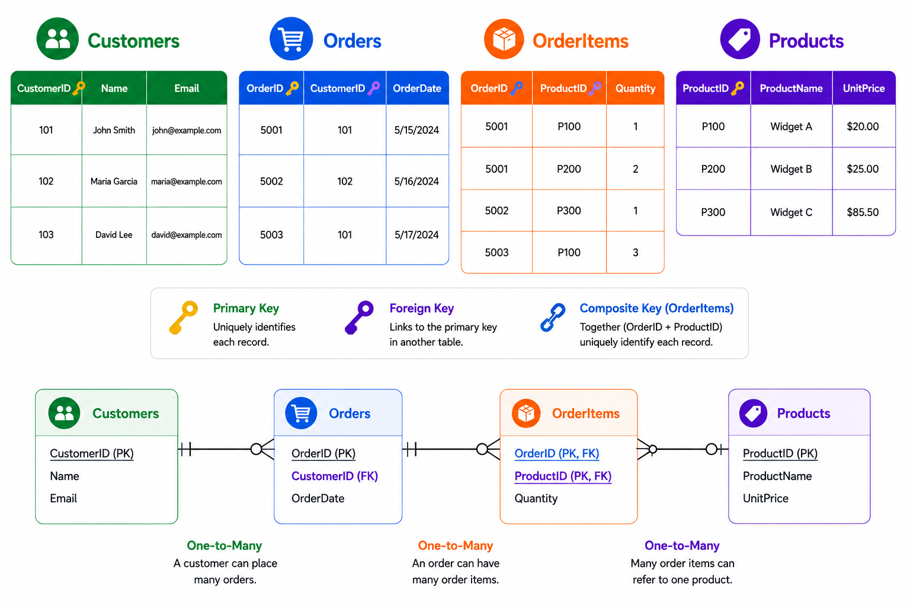
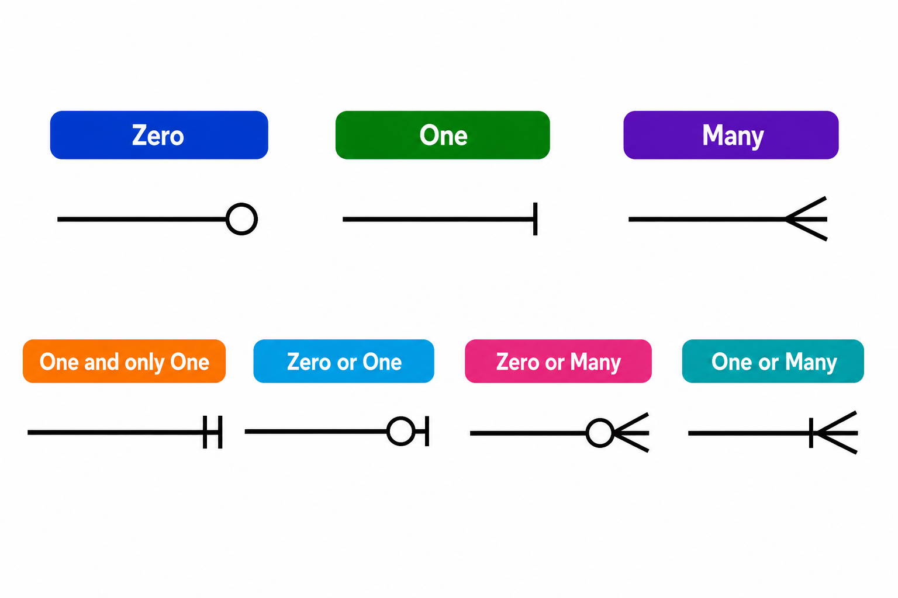
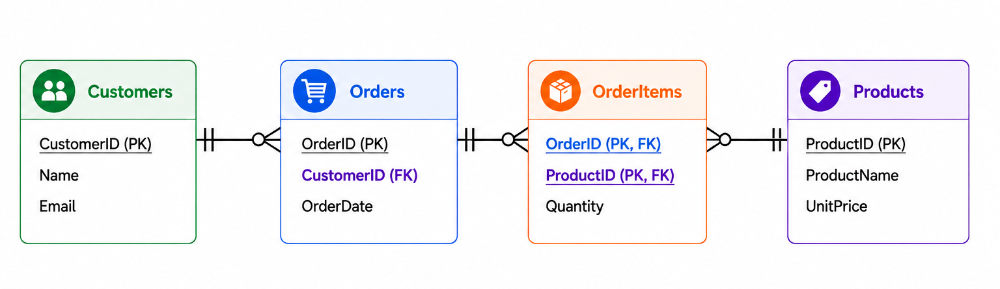
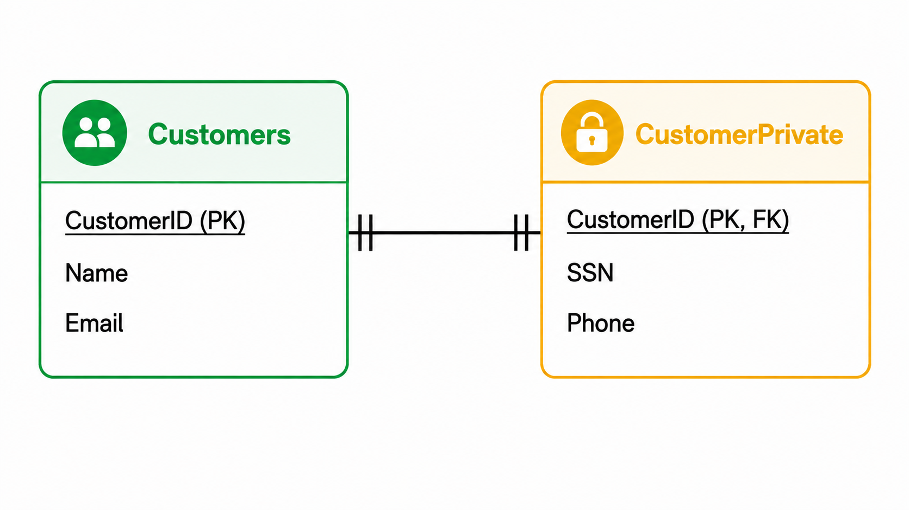
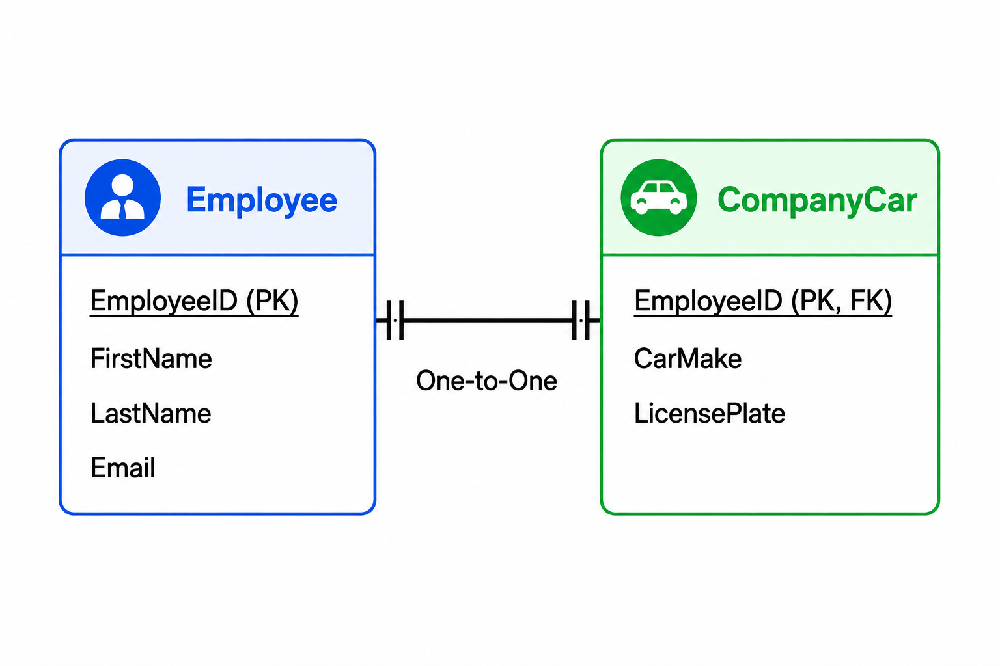
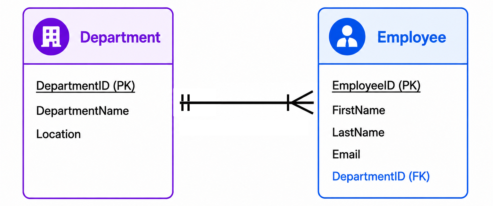
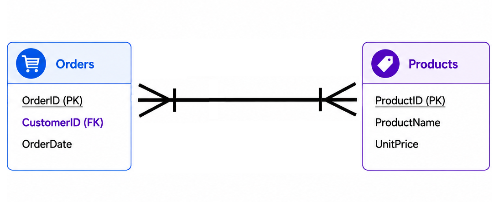
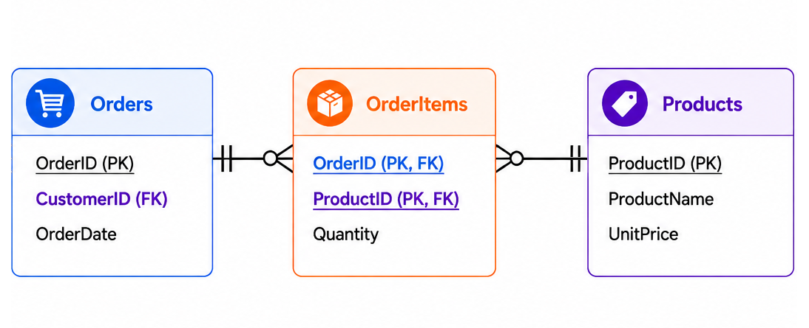
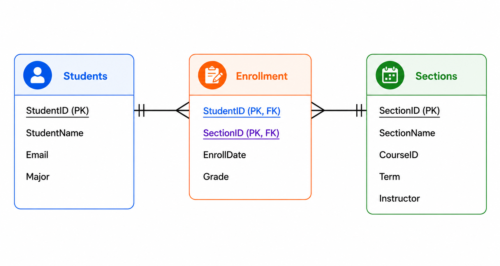
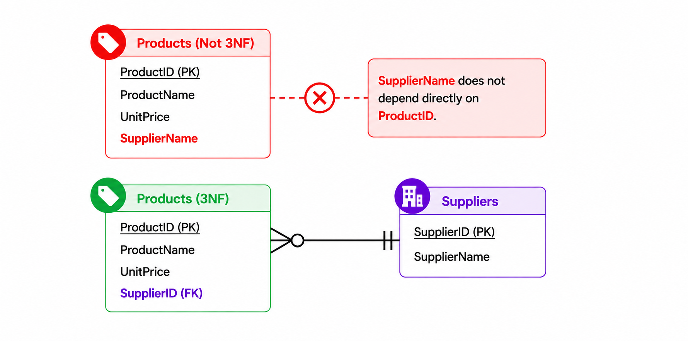

Relational Modeling
In the previous chapter, we introduced the relational model of databases. Relational databases help reduce redundancy, improve referential integrity, and make data retrieval efficient.
Data is stored in tables, where each table represents a real-world entity or a closely related group of items. Tables are made up of rows and columns. Each row, or record, stores one instance of an entity, and each column, or field, represents one attribute of that entity.
When this structure is shown in an entity-relationship diagram (ERD), the focus shifts away from actual data values and toward the design of the database. Attribute titles are listed within each entity. The diagram makes it easy to see how tables are related. The relationship between the entities is also called cardinality.

Comparing Database Designs
Relational modeling organizes data into tables connected by primary and foreign keys. Other database models organize data differently. Document databases store related information in flexible, JSON-like documents. Key-value databases pair a unique key with a value for fast retrieval. Graph databases represent entities as nodes and their connections as edges.
Relational models emphasize defined structure, keys, and relationships. Nonrelational models may emphasize flexible records, direct lookup, or connected networks. No model is best for every situation; the choice depends on the data, how it will be accessed, and the questions the system must answer.
Comprehension Check 1 of 5
Relationship Types
In an ERD, relationships are shown as lines between entities, often using crow's foot notation to indicate the type of relationship.

In our customer example, one customer can place zero or many orders, and each order belongs to one and only one customer. Each order can contain zero or many order items, and each order item belongs to one and only one order. Each order item is related to one product, while each product can appear in zero or many order items.

Why do we need the OrderItems table? Because customers do not simply order products in a single direct relationship. Instead, the many-to-many relationship between orders and products must be resolved through a linking table.
Comprehension Check 2 of 5
Entity Relationships
One-to-One
A one-to-one relationship is less common than a one-to-many relationship. One example is a customer table separated from a private customer information table for limited access.

Another example is an employee assigned one company car, where each car belongs to one employee.

One-to-Many
A one-to-many relationship is much more common. A customer can place many orders, but each order belongs to only one customer. Likewise, one department can have many employees, but each employee belongs to only one department.

Comprehension Check 3 of 5
Many-to-Many
A many-to-many relationship occurs when each record in one table can relate to many records in another table, and vice versa. In our orders and products example, one order can contain many products, and one product can appear in many orders.

Relational databases solve this by using a third table, called a linking table. Here, that table is OrderItems.

The many-to-many relationship is converted into two one-to-many relationships through the linking table. The OrderItems table also stores information about the relationship itself, such as quantity. That information does not belong in Orders or Products because it applies to the specific order-product combination.
The primary key of OrderItems is made from two foreign keys working together. This is called a composite primary key.
Comprehension Check 4 of 5
Normalization Rules
Normalization is a set of design rules used to organize data efficiently, reduce redundancy, eliminate anomalies, and improve maintainability. It divides data into smaller, simpler tables and applies a series of normal forms. Each normal form builds on the one before it.
Normalization is based on identifying functional dependencies: a relationship in which one attribute, or set of attributes, determines another. For example, a product ID determines the product name and price because each product ID identifies one specific product. In an order-items table, the combination of order ID and product ID determines the quantity ordered. Understanding these dependencies helps designers decide which attributes belong together and which should be moved to separate tables.
First Normal Form (1NF)
A table must have a primary key and no repeating attribute values in a row.
Second Normal Form (2NF)
2NF applies to tables with a composite primary key. Every non-key attribute must depend on the entire composite key, not just part of it. This is why quantity belongs in OrderItems: it depends on both the order and the product together.
For example, in a student enrollment table, grade belongs to the relationship between a student and a section, not to the student alone or the section alone.

Comprehension Check 5 of 5
Third Normal Form (3NF)
3NF applies when every non-key attribute depends only on the primary key and not on another non-key attribute. For example, if supplier name were stored in the Products table, it would create a transitive dependency: product ID determines supplier ID, and supplier ID determines supplier name. Instead, supplier information should be stored in a separate Suppliers table, with the supplier ID referenced in Products.

Human–AI Collaboration and Prompt Design
A prompt is an instruction or set of instructions provided to an AI system. Effective prompts describe the task, provide relevant context, identify the desired format, and establish limitations or evaluation criteria. Prompt design is not simply a matter of asking an AI tool a question. It is a process of defining a problem clearly enough that another person, computer program, or AI system can act on it. Strong prompts often include the role of the AI, the purpose of the task, the available data, the expected output, and examples of what a successful response should contain.
In professional settings, prompt design is most useful when it supports a repeatable workflow. An analyst might ask an AI system to explain a dataset, suggest possible data-quality checks, generate a formula, or propose alternative interpretations. The analyst must then test the response against the data and the business question, making sure the response is accurate and relevant. AI may produce several reasonable-looking answers, but the professional must decide which answer is appropriate and how it should be improved before it is used.
These practices reflect the growing importance of hybrid work in Information Systems. Prompt design and AI tool fluency are increasingly valuable, but most IS professionals will use AI alongside their own knowledge rather than work with AI independently. AI may handle routine portions of a task while humans provide judgment, context, communication, and accountability. Overseeing AI-generated analysis, verifying AI work, and coordinating multiple AI tools within a larger workflow are examples of these hybrid skills. Developing these abilities prepares students for careers in data analysis, business analysis, automation, consulting, and systems development, where directing, evaluating, correcting, and improving AI output will be more valuable than simply knowing how to generate it.
Chapter Completion
Answer all five comprehension questions, then check your work.
Chapter complete
Copy or write down this access code. You will need it later in class to receive your points.
entity-relationships